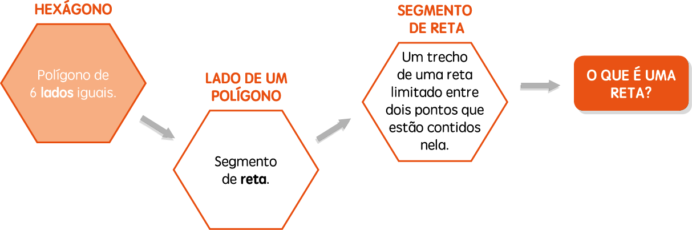
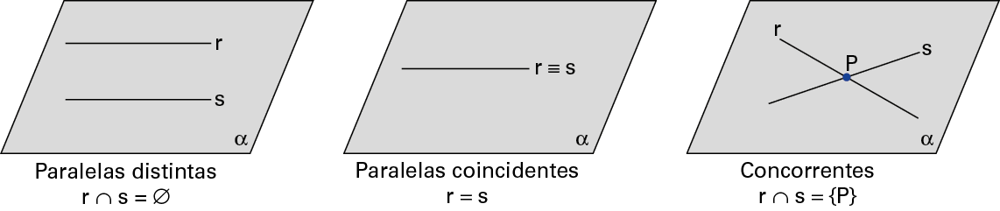

Construção lógica

Novamente, perceba a possibilidade de a pessoa não conhecer o significado de julgar, o que geraria uma nova consulta, que poderia ocasionar outra, e assim por diante, até o momento em que a pessoa se deparasse com palavras que já pertencem ao seu vocabulário. Em qualquer área do conhecimento, a situação descrita anteriormente é possível
Muitas vezes, ao buscar significações, encontramos uma condição cíclica, como em alguns dicionários nos quais o significado de conservar é manter e o significado de manter é conservar. Assim, assumimos que determinados significados são do conhecimento de todos.
Na Geometria, também assumimos alguns “pontos de partida”, que chamamos de entes primitivos e de postulados. As demais proposições, propriedades e teoremas podem ser demonstrados.
Entes primitivos
Vamos pensar no significado da palavra hexágono.
Defina o que é uma reta.
O ponto, a reta e o plano são entes geométricos primitivos, pois não têm definição e são aceitos de modo intuitivo. É por meio desses entes que definimos todas as outras formas geométricas.

Posiçao relativa entre duas retas coplanares
Observe, a seguir, os três casos de retas coplanares
Agora, veja a representaçao de retas reversas

Postulados
Os postulados são verdades simples que aceitamos sem a necessidade de uma justificativa. Assim como os entes primitivos são utilizados para definir as outras formas geométricas, os postulados servem como pontos de partida para construirmos afirmações e estudarmos as propriedades das formas geométricas.
Os postulados podem ser divididos em três categorias: postulados da existência, postulados da determinação e postulado da inclusão.
Postulados da existência
Os postulados da existência afirmam que existem infinitos pontos nas retas e nos planos.
- Em uma reta existem infinitos pontos, assim como fora dela.
- Em um plano existem infinitos pontos, assim como fora dele.

Postulados da determinação
Os postulados da determinação garantem a existência e a unicidade de uma reta e um plano.
- Por dois pontos distintos passa uma única reta.
- Por três pontos não alinhados passa um único plano.
Postulado da inclusão
O postulado da inclusão afirma o que precisamos ter para garantirmos que uma reta está contida em um plano.
- Se uma reta tem dois pontos distintos em um plano, ela está contida no plano.
Pouco se tem registrado sobre a vida do matemático Euclides de Alexandria; sabese que ele viveu no século III a.C. Não chegou até nós detalhes sobre a sua trajetória nem ao menos o ano e local de nascimento. É provável que tenha sido professor e fundador da escola de matemática de Alexandria e que tenha estudado na Academia de Platão.
Responsável por compilar os conhecimentos gregos, tanto em teoria dos números quanto em Geometria, em uma obra de 13 volumes chamada de Os Elementos, Euclides se tornou o autor dos livros que mais foram estudados ao longo de nossa trajetória na evolução da ciência de uma forma geral.
Em sua homenagem, a parte da Geometria elaborada com base nos postulados de Euclides é chamada de Geometria euclidiana.